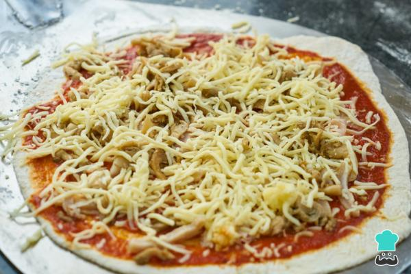

Receta de Pizza casera
15 de marzo 2022

Elaborar nuestra propia receta de pizza casera fácil es un proceso mucho más sencillo de lo que creemos, solo necesitamos conocer los ingredientes para pizza necesarios y el proceso a seguir para integrarlos. En RecetasGratis queremos que aprendas recetas fáciles que te permitan preparar platos exquisitos y únicos, como diferentes variedades de pizzas caseras. Por ello, aquí te mostramos cómo hacer pizza casera, ¿vas a perdértela?
Los platos elaborados de forma artesanal siempre constituyen una comida de mayor calidad y
más económica, por eso te animamos a que sigas leyendo y descubras los pasos para realizar esta
pizza casera al horno con los ingredientes para pizza que te apetezcan. ¡Así siempre sabrás qué
añadir a un pizza hecha en casa!
4 comensales
1h 30m
Plato principal
Dificultad baja
|
Ingredientes:
1 kilogramo de harina
1 cucharadita de sal fina
2 1/2 tazas de agua tibia
2 cucharadas soperas de aceite de oliva
30 gramos de levadura fresca
|
También te puede interesar: Pizza casera con ketchup
Cómo hacer pizza casera:
- Antes de empezar con la receta de pizza casera fácil resulta fundamental hacer una pequeña aclaración sobre la harina. Para realizar este tipo de masas, la harina más recomendada es la de fuerza, puesto que al contener un mayor porcentaje de gluten el resultado será una masa de pizza casera mucho más esponjosa. En los países de América Latina, sobre todo, este tipo de harina es conocido como harina 00. Ahora bien, si quieres pizza casera sin gluten, consulta esta otra receta.
- Ahora sí, ¡empezamos la receta de pizza casera! Para ello, lo primero que vamos a hacer es mezclar en un recipiente el agua templada con la levadura fresca. Para elaborar una masa para pizza casera fácilmente puedes utilizar este tipo de levadura o hacer una masa de pizza con levadura seca, ambas son válidas. En el caso de que prefieras la seca, deberás mezclarla con la harina y si, por el contrario, prefieres la fresca, es fundamental mezclarla con agua tibia. La levadura fresca es aquella que se vende en bloque y se tiene que conservar en el frigorífico.
En general, unos 30 gramos de levadura fresca equivalen a unos 10 gramos de levadura seca, tenlo en cuenta por si quieres usar una levadura diferente a la de esta receta de pizza italiana.
- Cuando hayas mezclado la levadura con el agua, agrega las dos cucharadas de aceite. Mezcla bien para que se integren todos los ingredientes para la pizza.
- Antes de que la preparación se enfríe, añade en un bol amplio la harina de fuerza y la sal, acomódalas en forma de volcán. Vierte la mezcla anterior en el centro.
- Ahora es cuando tienes que empezar a amasar bien hasta que notes que la masa de pizza casera deja de pegarse en tus manos y puedes manejarla sin problemas.
- Cuando tengas la masa de pizza esponjosa lista, deberás darle forma de tubo largo y cortarla en 4 particiones. Después, haz una bola con cada partición y tápalas con un trapo limpio y seco. Deberás dejarlas reposar durante 45 minutos. Verás que, poco a poco, empiezan a elevarse hasta duplicar su volumen. Cada bola de masa te servirá para hacer una pizza casera normal.
- Pasado el tiempo correspondiente, espolvorea un poco de harina sobre una mesa para preparar la pizza casera, coge una de las bolas y colócala sobre ella. Ahora deberás extenderla con tus manos estirando desde el centro hacia los costados, dándole forma circular. Si dispones de rodillo también puedes utilizarlo para que quede más fina la masa. Una vez estirada, ya puedes añadir la salsa para pizza casera y los ingredientes para pizza que prefieras. Puedes usar esta deliciosa receta casera de salsa de tomate y cebolla para pizza.
En RecetasGratis dispones de varias recetas de pizza casera>, por eso te aconsejamos que visites las siguientes ideas antes de meterla en el horno:
- Una vez hayas escogido los ingredientes y tengas tu masa de pizza casera terminada, deberás precalentar el horno a temperatura máxima durante unos 20 minutos.

- Pasado el tiempo, introduce la preparación pizza casera y hornéala durante 10 minutos aproximadamente. Deberás vigilarla porque el tiempo final variará en función del tipo de horno y la intensidad que tenga. ¡Listo, tu pizza casera al horno estará para chuparse los dedos!

Si re ha gustado la receta de Pizza casera, te sugerimos que entres en nuestra categoría de Recetas de Pizza.
Cómo hacer la pizza casera perfecta - sugerencias
En esta receta te hemos explicado cómo hacer una masa de pizza casera de forma fácil para obtener un resultado excelente, pero queremos que tengas algunos consejos extras en cuenta a la hora de añadir los ingredientes que más te gusten a tu pizza casera al horno:
- Ten en cuenta que la salsa debe ser siempre lo primero que añadas a cualquier pizza. Luego, deberás agregar el queso y, por último, el resto de los ingredientes.
- Algunos ingredientes como la albahaca, la rúcula, el salmón o el jamón quedan mejor si se agregan después del horneado, pues pueden quemarse o endurecerse durante la cocción.
- Las pizzas al horno de leña o en hornos especializados pueden llegar a cocerse a alrededor de los 400 °C, así que lo mejor es utilizar la temperatura máxima de tu horno en casa y prestar atención para que no se pase de cocción.
- Puedes usar cualquier queso rallado que tengas para tu pizza casera, pero te recomendamos usar queso mozzarella porque se funde mejor y queda más delicioso.
- Si no cuentas con levadura, puedes seguir nuestra receta de masa de pizza sin levadura.